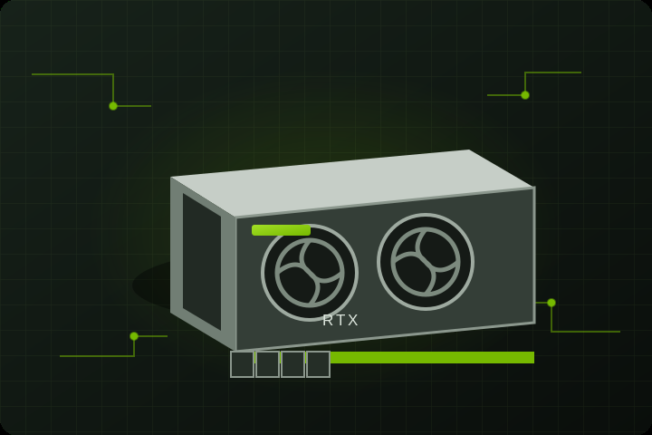
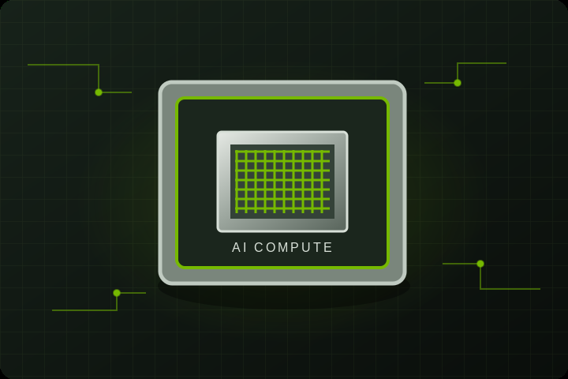
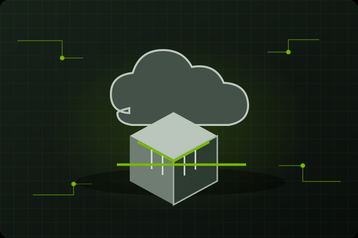
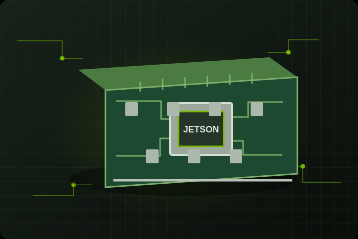
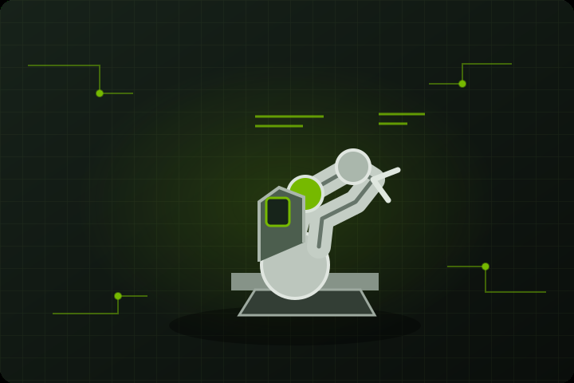
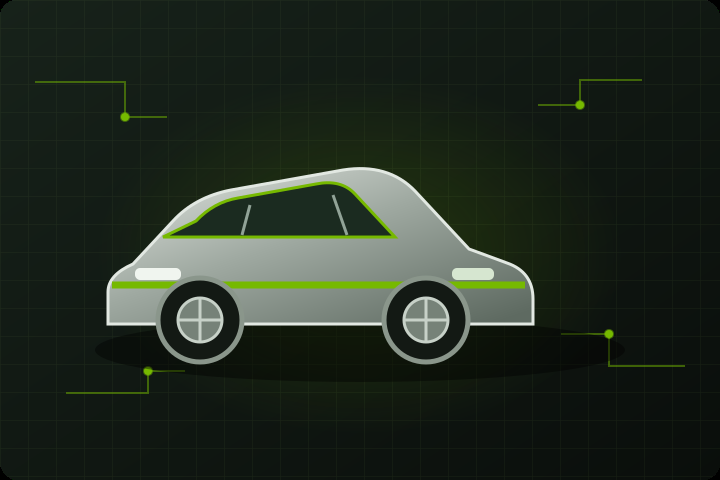
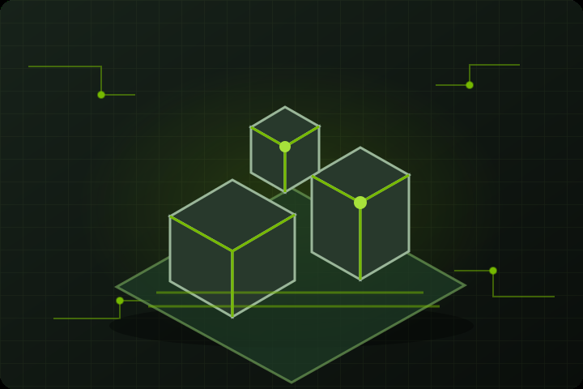
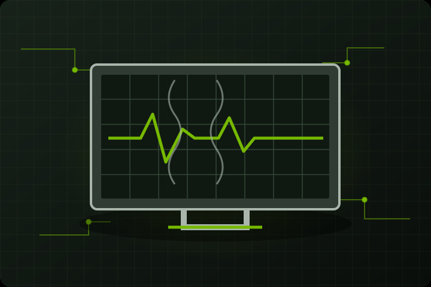

1993–1995
Os primeiros gráficos 3D
A NVIDIA foi fundada em 1993 por Jensen Huang, Chris Malachowsky e Curtis Priem. Em 1994, fez uma parceria com a SGS-Thomson. Em 1995, lançou o NV1, vendido como Diamond Edge 3D.
NV1 · Diamond Edge 3D
COMPUTAÇÃO ACELERADA
Tecnologias que fazem os gráficos, a inteligência artificial e novas formas de computação funcionarem.
A NVIDIA cria tecnologias para gráficos e inteligência artificial, usadas em jogos, computadores, data centers e carros.
Tudo começou com a computação gráfica. Com o tempo, as GPUs passaram a ajudar em tarefas que vão muito além de desenhar imagens na tela.
Hoje, esse conjunto de tecnologias está presente na criação de conteúdo, na pesquisa científica, nos automóveis, na robótica e na inteligência artificial.
Hardware e software trabalham juntos: a GPU faz o processamento, e as plataformas e ferramentas ajudam os programas a usar essa força.
Dos primeiros aceleradores gráficos até as tecnologias que hoje sustentam a inteligência artificial.
A NVIDIA foi fundada em 1993 por Jensen Huang, Chris Malachowsky e Curtis Priem. Em 1994, fez uma parceria com a SGS-Thomson. Em 1995, lançou o NV1, vendido como Diamond Edge 3D.
NV1 · Diamond Edge 3DA empresa ampliou a família RIVA e, em 1999, apresentou a GeForce 256, considerada a primeira GPU. Também lançou a linha Quadro e forneceu os chips gráficos do primeiro Xbox.
RIVA · GeForce 256 · QuadroChegaram a plataforma nForce, a GeForce3 programável e a tecnologia SLI. A computação gráfica ajudou a NASA a recriar o terreno de Marte, e a NVIDIA anunciou o chip gráfico do PlayStation 3.
GeForce3 · SLI · PlayStation 3Em 2006, a NVIDIA apresentou o CUDA, que permite usar a GPU em outros tipos de cálculo. A família Tesla levou esse poder a pesquisadores e supercomputadores. Nessa época também surgiram o Tegra, o Fermi e a primeira GTC.
CUDA · Tesla · TegraVieram as arquiteturas Kepler e Maxwell, a GPU virtual GRID, a linha SHIELD e avanços em deep learning. Em 2015, chegaram o NVIDIA DRIVE e o Jetson TX1.
GRID · SHIELD · DRIVE · JetsonA NVIDIA lançou o DGX-1, Pascal, Volta, Turing e Ampere, além do Jetson AGX Xavier, Isaac, Clara, RAPIDS, NVIDIA Studio, DRIVE AGX Orin e EGX. Em 2020, terminou a compra da Mellanox.
DGX · Isaac · Clara · AmpereHardware, software e plataformas trabalham juntos para deixar diferentes tipos de processamento mais rápidos.
Linha de placas de vídeo usada principalmente em jogos, edição de vídeo e criação de imagens 3D, com foco em desempenho e qualidade visual.
GRÁFICOSPlataforma que permite usar a GPU em cálculos que não são só gráficos. É usada em inteligência artificial, ciência e análise de dados.
COMPUTAÇÃORecursos para jogos. O ray tracing simula como a luz se comporta, e o DLSS usa IA para melhorar a imagem e o desempenho.
GAMESGPUs, arquiteturas e sistemas completos que processam grandes quantidades de informação e aceleram trabalhos de inteligência artificial.
INFRAESTRUTURAO Broadcast melhora o áudio e o vídeo nas chamadas. O ChatRTX é um assistente de IA que pode analisar arquivos do seu próprio computador, se ele for compatível.
PRODUTIVIDADEO DRIVE é usado em sistemas de ajuda ao motorista e direção automática. O Jetson é um computador pequeno para robôs e aplicações de IA.
MOBILIDADEO Omniverse ajuda em trabalhos com 3D e simulações. O Isaac reúne ferramentas para criar e testar robôs.
SIMULAÇÃOTecnologias para saúde e ciência, como o trabalho com imagens médicas e pesquisas feitas no computador.
SAÚDE · CIÊNCIAVeja algumas linhas de hardware, plataformas e programas da NVIDIA para diferentes necessidades.

Placas de vídeo para jogos e criação, com ray tracing e recursos gráficos que usam inteligência artificial.
Conhecer solução ↗
Ferramentas que ajudam na edição de vídeo, design, ilustração e renderização 3D.
Conhecer solução ↗Recursos de IA para tirar ruídos, melhorar a imagem e deixar transmissões e chamadas melhores.
Conhecer solução ↗Serviço que permite jogar títulos compatíveis pela internet, em vários aparelhos.
Conhecer solução ↗Aparelho para assistir filmes e séries em alta resolução e se divertir em casa.
Conhecer solução ↗
Computador de mesa feito para criar e rodar projetos de IA no próprio local.
Conhecer solução ↗Sistemas completos para criar, treinar e usar modelos de inteligência artificial.
Conhecer solução ↗
Arquitetura e plataformas pensadas para trabalhos pesados de IA e processamento em grande escala.
Conhecer solução ↗
Família de processadores (CPUs) feita para trabalhar junto com sistemas de computação acelerada e de IA.
Conhecer solução ↗
Plataforma gráfica para design, engenharia e outros trabalhos profissionais que pedem muito desempenho.
Conhecer solução ↗
Plataforma de programação que deixa usar a GPU para vários tipos de cálculo.
Conhecer solução ↗
Ferramentas para deixar a IA mais rápida e colocá-la para funcionar em diferentes ambientes.
Conhecer solução ↗
Recursos para trabalhar com modelos, contêineres, bibliotecas e aplicações de IA generativa.
Conhecer solução ↗
Aplicativo que usa modelos de IA no seu computador para pesquisar nos seus próprios arquivos.
Conhecer solução ↗
Computador pequeno para criar aplicações embarcadas, visão computacional e robôs.
Conhecer solução ↗
Plataforma e ferramentas para criar, simular e colocar robôs para funcionar.
Conhecer solução ↗
Plataforma para carros, com sistemas inteligentes de bordo e ajuda ao motorista.
Conhecer solução ↗
Plataforma para trabalhos em 3D e simulações, incluindo a criação de gêmeos digitais.
Conhecer solução ↗
Tecnologias para saúde e ciência, incluindo o trabalho com imagens médicas.
Conhecer solução ↗Nenhum produto encontrado. Tente outra palavra ou escolha outra categoria.
A computação acelerada muda de forma conforme o problema, o lugar onde é usada e o tipo de dado.
Imagens em tempo real, ray tracing e recursos de IA deixam os jogos mais detalhados.
Vídeo, design, renderização e chamadas usam recursos gráficos e ferramentas aceleradas.
GPUs e sistemas completos processam muitos dados e ajudam a treinar e usar modelos de IA.
Computadores podem ler sensores e ajudar em recursos de assistência ao motorista e direção automática.
Simulação e computadores pequenos ajudam a criar, testar e controlar máquinas autônomas.
O processamento acelerado pode ajudar na análise de imagens médicas, em pesquisas e em simulações.
Ambientes virtuais e simulações permitem estudar fábricas, robôs e construções antes de mudar qualquer coisa no mundo real.
A computação acelerada permite calcular e simular mais coisas, mas traz questões de custo, energia e produção.
Mais força para treinar e usar modelos de computador.
Imagens em 3D, mundos virtuais e simulações digitais.
A computação acelerada pode ajudar a estudar e prever o clima.
Pesquisas com imagens médicas, robôs e sistemas de ajuda ao motorista.
Rodar modelos de IA exige muita eletricidade e uma boa estrutura de computadores.
Fazer chips depende de uma cadeia global complicada e de poucas fábricas avançadas.
Equipamentos de ponta podem ser caros demais para pequenas empresas e escolas.
Usar sistemas avançados também pede conhecimento, suporte e estrutura adequada.
A evolução das GPUs ampliou o papel do processamento paralelo. Além de gerar gráficos, ele passou a ajudar na inteligência artificial, na pesquisa científica, nas simulações, na automação e nos veículos.
Esse avanço abre novas possibilidades, mas também é preciso pensar no gasto de energia, nos custos e no acesso à estrutura necessária. Entender isso ajuda a enxergar a tecnologia de forma mais completa.
Voltar ao início ↑